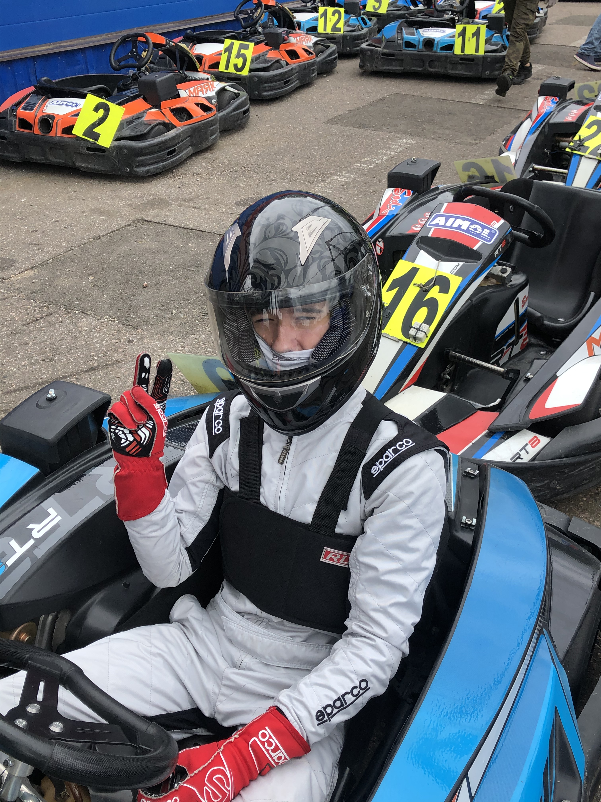
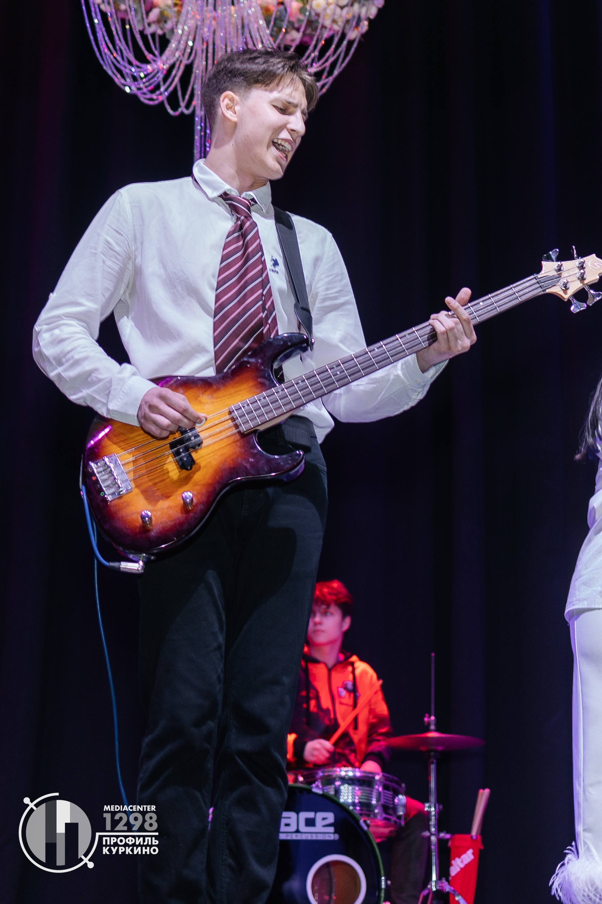
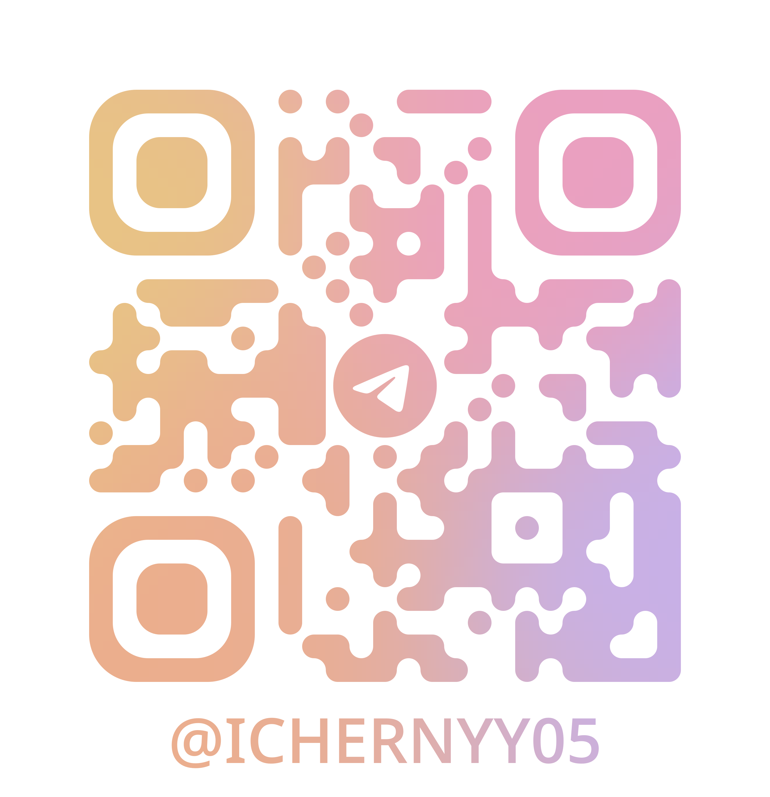

Привет! Меня зовут Иван
Раньше моя жизнь была на скоростной трассе — я был полупрофессиональным картингистом и даже забирался на призовые подиумы на крупных соревнованиях. Этот опыт научил меня главному: любая победа требует не только азарта, но и холодного расчета, выверенной стратегии и тотальной концентрации. Именно эти принципы я теперь применяю в других сферах.
Сегодня я могу с тем же азартом анализировать код или строить стратегии на крипторынке, а вечером — наводить телескоп на далёкие туманности. Смотреть на звёзды — мой способ оставаться на связи с чем-то по-настоящему грандиозным и напоминать себе о масштабе.
А ещё меня невозможно представить без музыки, которая задаёт ритм всему, что я делаю. Ну и конечно, я большой фанат хороших анекдотов и сочной хурмы. Считаю, что чувство юмора и безупречный вкус должны быть во всём!

Привет! Я Миша
Мой мир — это код, карты путешествий и ритм. Учусь на бизнес-аналитика для глобального IT-рынка, а в свободное время руковожу проектами в студсовете и преподаю информатику в технопарке. Пять лет работы вожатым научили меня главному — управлять не процессами, а вниманием и энергией людей.
Объездил пол-России, потому что верю: настоящие открытия начинаются с изучения своей страны. А мой личный soundtrack — это барабаны. Когда играю, чувствую тот же драйв, что и при запуске нового проекта.
И как говорил Цукерберг: «Я не люблю анчоусы». А я не люблю стоять на месте. Мой принцип — двигаться, пробовать и создавать. Даже если для этого нужно одновременно вести пару, репетировать с группой и планировать следующую поездку на Камчатку.
Вот такой я — аналитик, который верит, что технологии и человеческие эмоции создают лучшие проекты.
